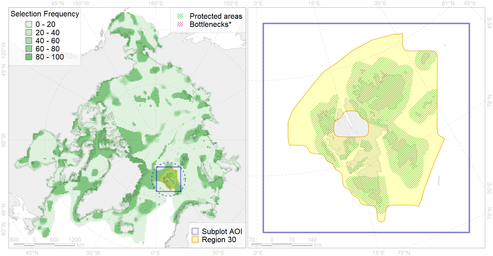

Region 30
Region 30
“ArcNet” scenario 33 achievement for region 30.
Use Accenter for advanced mode.

2
CFs inside of Region completely
27
CFs inside of Region at quarter
28
Complete-targets achievement by Region
48
Half-targets achievement by Region
| CF | Name | Target Achievement for Region | Proportion of Target Achievement in Region | Amount Proportion in Region |
|---|---|---|---|---|
| 7238 | Kelp forests of Spitsbergen | 316.7% | 100.0% | 100.0% |
| 2051 | Ringed seal whelping areas in the Spitsbergen region | 555.6% | 100.0% | 100.0% |
| 5028 | Beluga of the Svalbard stock summer core distribution | 169.2% | 100.0% | 100.0% |
| 2039 | Ringed seal foraging areas in the Spitsbergen region | 541.3% | 99.9% | 99.9% |
| 8044 | Spitsbergen glacial termini | 327.2% | 99.5% | 98.5% |
| 6033 | Little auk (Alle alle alle) breeding colonies in Spitsbergen | 176.8% | 97.4% | 96.4% |
| 6042 | Ivory gull (Pagophila eburnea) Spitsbergen breeding colonies | 144.1% | 99.8% | 95.7% |
| 3121 | polynya Svalbard | 778.4% | 97.3% | 95.1% |
| 3015 | Fast ice distribution in the Spitsbergen region | 1528.9% | 97.9% | 95.0% |
| 5027 | Beluga of the Svalbard stock summer distribution | 258.3% | 98.2% | 94.9% |
| 6056 | Common eider (Somateria mollissima borealis) Spitsbergen breeding&moulting grounds | 164.3% | 94.2% | 92.6% |
| 2018 | Harbour seal whelping and moulting areas in Spitsbergen region | 213.1% | 94.3% | 76.7% |
| 1008 | Atlantic Walrus haulouts in Spitsbergen and FJL region | 92.3% | 79.9% | 76.5% |
| 6098 | 6098 PagophileburneSvalbard breeding colonies | 164.6% | 96.1% | 72.6% |
| 6022 | Atlantic puffin (Fratercula arctica naumanni) breeding colonies | 97.5% | 73.9% | 71.3% |
| 6093 | 6093 Little auk breeding colonies of A. alle alle Svalbard | 171.8% | 80.4% | 63.4% |
| 2015 | Bearded seal whelping areas in Spitsbergen region | 318.1% | 80.9% | 58.8% |
| 7053 | cold corals of the High Arctic | 77.0% | 58.1% | 50.0% |
| 1005 | Atlantic Walrus Winter Distribution in Spitsbergen and FJL region | 157.6% | 60.9% | 44.7% |
| 6082 | Thick-billed murre (Uria lomvia lomvia) breeding colonies | 59.5% | 50.7% | 43.6% |
| 6090 | 6090 Fratercularcticnaumanni breeding colonies | 74.8% | 47.4% | 36.9% |
| 3037 | Marginal Ice Zone distribution in July in the Barents Sea LME | 147.2% | 49.3% | 35.9% |
| 6009 | Brent goose (Branta bernicla hrota) Greenland, Svalbard and FJL breeding&moulting grounds | 180.8% | 33.5% | 33.8% |
| 9003 | polar bear of the BS (Barents Sea) subpopulation distribution | 118.7% | 57.8% | 32.5% |
| 1006 | Atlantic Walrus Summer Distribution in Spitsbergen and FJL region | 109.7% | 59.1% | 31.0% |
| 7056 | cold seeps and mud vulcanoes | 36.0% | 34.4% | 28.6% |
| 6047 | Black-legged kittiwake (Rissa tridactyla pollicarius) breeding colonies | 39.1% | 33.7% | 25.6% |
| 7070 | I.1.2.1. Barents western slope | 132.5% | 62.4% | 22.9% |
| 5045 | Bowhead whale of the Spitsbergen population core distribution | 25.9% | 25.9% | 19.8% |
| 4039 | Spawning areas of the Polar Cod (Boreogadus saida) in the Barents Sea (F 35) | 40.3% | 27.1% | 19.7% |
| 5051 | Fin whale summer feeding areas in Norway | 72.0% | 52.6% | 19.5% |
| 5061 | Humpback whale summer feeding areas in Norway | 150.0% | 41.9% | 18.5% |
| 7072 | I.1.2.3. Slope canyons | 68.4% | 49.0% | 17.3% |
| 4001 | Arctic fish complex of the Barents region | 273.9% | 49.8% | 17.0% |
| 7071 | I.1.2.2. Barents - Kara northern slope | 47.1% | 46.5% | 16.6% |
| 7066 | I.1.1.3. Shelf plains | 425.0% | 35.0% | 16.1% |
| 3026 | Marginal Ice Zone distribution in April in the Barents Sea LME | 124.8% | 29.6% | 15.3% |
| 4090 | Fish zoogeography, Arctic Region, Subarctic Transitional-Atlantic Province, Euro-Asian Bathyal District | 89.1% | 49.6% | 14.7% |
| 5067 | Minke whale feeding areas in the Northeast Atlantic | 117.7% | 36.3% | 14.4% |
| 7252 | 7252 I 1 1 5 1 | 19.4% | 18.2% | 13.6% |
| 4040 | Larvae distribution of the Polar Cod (Boreogadus saida) in the Barents Sea (F35) | 26.1% | 15.0% | 13.1% |
| 9038 | polar bear denning areas of BS (Barents Sea) subpopulation | 23.9% | 15.3% | 12.8% |
| 6028 | Glaucous gull (Larus hyperboreus hyperboreus) breeding grounds | 98.8% | 15.5% | 12.1% |
| 4038 | Feeding area of the Polar cod in the Barents Sea (F 35) | 46.8% | 33.8% | 11.6% |
| 7190 | VI.2. Gakkel Ridge and Ermak Plateau VI.2.1. Plateaus | 22.3% | 22.1% | 11.1% |
| 6106 | 6106 Urilomvilomvibreeding colonies | 22.2% | 16.3% | 10.9% |
| 6099 | 6099 Rissa tridactyla tridactyla breeding colonies | 16.2% | 16.2% | 10.8% |
| 5099 | White-beaked dolphin feeding area in the Eastern North Atlantic | 83.9% | 30.2% | 10.2% |
| 5037 | Blue whale summer feeding areas in the Northeast Atlantic | 39.2% | 29.8% | 10.0% |
| 2036 | Ringed seal foraging areas in the Beaufort Sea | 34.4% | 15.2% | 8.5% |
| 6040 | Ivory gull (Pagophila eburnea) postbreeding grounds in the Barents and the Kara Sea | 30.9% | 14.5% | 6.9% |
| 4057 | Range of the American Plaice (Hippoglossoides platessoides) (F 47), American populations | 216.7% | 19.6% | 6.7% |
| 6015 | Black guillemot (Cepphus grylle mandti) breeding grounds | 50.1% | 10.8% | 6.2% |
| 4054 | Range of the Shorthorn Sculpin (Myoxocephalus scorpius) (F 46), European populations | 182.5% | 13.3% | 5.7% |
| 3055 | Multiyear Ice distribution in September in the Barents Sea LME | 30.2% | 10.0% | 5.6% |
| 7025 | Eurasian bathyal region | 50.9% | 13.6% | 5.4% |
| 5112 | Arctic Cetaceans (beluga, bowhead, narwhal) winter habitats as predicterd by MIZ | 12.1% | 9.9% | 5.0% |
| 7068 | I.1.1.5.1. Shallow ( < 100 m) shelf banks | 52.8% | 7.5% | 4.9% |
| 4076 | Fish zoogeography, Arctic Region, High-Arctic Shelf Province, N Barents – Kara-Sea District | 62.8% | 16.2% | 4.6% |
| 6004 | Little Auk (Alle alle polaris) wintering grounds | 20.5% | 11.4% | 3.8% |
| 4094 | Subarctic fish complex of the Barents region | 61.7% | 11.4% | 3.8% |
| 5046 | Bowhead whale of the Spitsbergen population home range | 18.9% | 18.8% | 3.7% |
| 4087 | Fish zoogeography, Arctic Region, Subarctic Transitional-Atlantic Province, Murman – Spitsbergen aquatory of the Barents District | 17.6% | 11.0% | 3.5% |
| 4046 | Range of the Thorny Skate (Amblyraja radiata) (F 3) | 45.2% | 8.5% | 3.4% |
| 4049 | Range of the Haddock (Melanogrammus aeglefinus) (F 42) | 51.2% | 8.1% | 3.2% |
| 7067 | I.1.1.4. Shelf troughs | 94.9% | 15.2% | 3.0% |
| 4045 | Feeding/migration area of the Pink Salmon (Oncorhynchus gorbuscha), native distribution (F23) | 49.2% | 8.0% | 3.0% |
| 4059 | Range of the Greenland Halibut (Reinhardtius hippoglossoides) (F 49) | 95.0% | 8.0% | 2.9% |
| 4030 | Feeding area of the Arctic charr (Salvelinus alpinus), anadromous populations (F28) | 6.9% | 6.0% | 2.8% |
| 4017 | Feeding/ migration area of the Greenland Shark (Somniosus microcephalus) (F1) | 12.0% | 7.0% | 2.7% |
| 4003 | Range of the Atlantic Capelin (Mallotus villosus) (F10) | 82.2% | 6.9% | 2.5% |
| 6096 | 6096 PagophileburneFJL breeding colonies | 4.9% | 3.9% | 2.2% |
| 4032 | Range of the Arctic skate (Amblyraja hyperborea) (F2) | 61.7% | 4.7% | 1.9% |
| 4037 | Distribution of the Glacial cod (Arctogadus glacialis) (F34) | 20.2% | 4.9% | 1.9% |
| 2020 | Harp seal foraging areas in the Barents Sea | 5.3% | 5.3% | 1.3% |
| 4041 | Range of the Polar Cod (Boreogadus saida) (F35) | 9.9% | 3.8% | 1.2% |
| 2061 | Ringed seal circumpolar foraging areas as predicted by MIZ distribution | 3.8% | 2.0% | 0.9% |
| 4096 | Range of the Glacial eelpout (Lycodes frigidus) | 10.8% | 2.8% | 0.7% |
| 4027 | Feeding/migration area of the Atlantic salmon (Salmo salar) American populations (F27) | 2.4% | 1.6% | 0.5% |
| 4079 | Fish zoogeography, Arctic Region, Arctic Abyssal Province (11A -Scandian, 11B - Central-Arctic and 11C - Baffin Deep-sea Districts ) | 10.4% | 1.8% | 0.4% |
| 5113 | Sperm whale summer feeding areas in Atlantic | 1.3% | 1.1% | 0.2% |
| 9006 | polar bear of the EG (East Greenland) subpopulation distribution | 0.6% | 0.3% | 0.2% |
| 3025 | Marginal Ice Zone distribution in April in the Greenland Sea LME | 0.5% | 0.5% | 0.2% |
| 7173 | VII.1.3. Abyssal hills | 0.9% | 0.3% | 0.1% |
| 7174 | VII.1.4. Abyssal mountains | 0.5% | 0.3% | 0.1% |
| 3036 | Marginal Ice Zone distribution in July in the Greenland Sea LME | 0.4% | 0.1% | 0.1% |
| 7265 | Barents and Kara Sea Throughs | 0.3% | 0.1% | 0.0% |
| 3054 | Multiyear Ice distribution in September in the Greenland Sea LME | 0.1% | 0.0% | 0.0% |
| 7194 | VI.2.6. Rift valleys | 0.0% | 0.0% | 0.0% |
| 2059 | Harp seal foraging areas in Greenland as predicted by MIZ distribution | 0.0% | 0.0% | 0.0% |
| 7017 | Amundsen and Nansen Basins abyssal region | 0.0% | 0.0% | 0.0% |